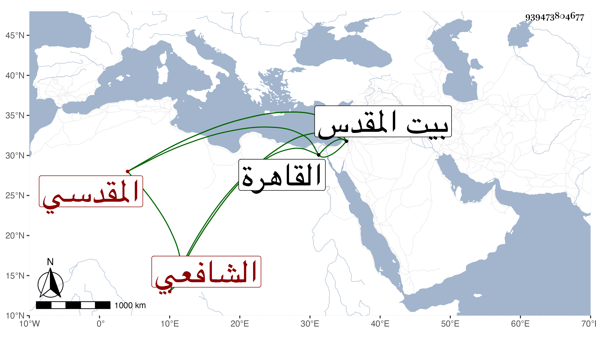

0902Sakhawi.DawLamic.ITO20230111-ara1.EIS1600.939473804677
Biography ID: 939473804677
545
علي بن إبراهيم بن محمد بن عبد الرحيم بن عبد الكريم بن عبيد بن مسلم بن سلامة العلاء أبو الحسن الرباوي الأصل نسبة للربة بفتح المهملة وتشديد الموحدة قرية بكرك الشوبك ثم المقدسي قاضيه الشافعي . ولد سنة اثلتين وسبعين وسبعمائة وسمع من أبي الحسن علي بن محمد بن العفيف النابلسي بها المسلسل وجزء ابن الطلاية وجزءا من غرائب ابن ماجه انتقاء الذهبي وحدث سمع منه الفضلاء ، وذكره التقي بن فهد في معجمه وولى قضاء بيت المقدس في أوائل سنة اثنتين وثلاثين عن الفوعى بعناية العز عبد السلام القدسي فاستمر إلى أوائل سنة خمس وثلاثين ثم صرف بالقاضي ناصر الدين البصروي ودخل القاهرة ساعيا في العود فما أجيب فناب فيها عن شيخنا في باب الشعرية بسفارة الولوى بن قاسم ثم عاد إلى القدس فكانت منيته به في أحد الجمادين ظنا سنة إحدى وأربعين رحمه الله .
